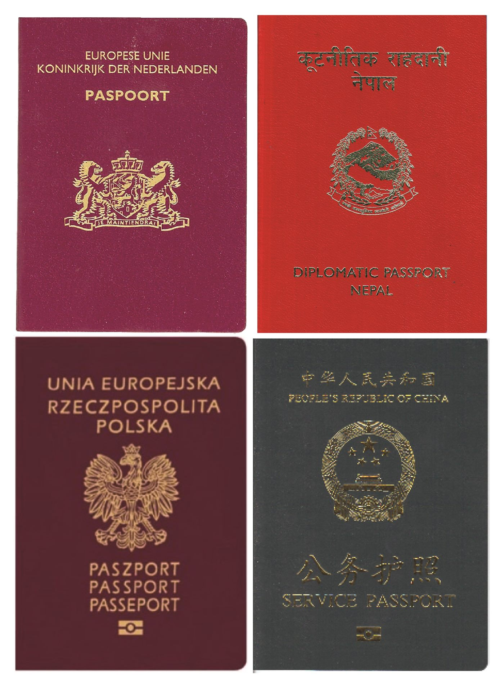

러시아, 中 국민 무비자 입국 정책 연장… 인적·관광 교류 확대
러시아가 중국 국민에 대한 무비자 입국 정책을 연장하기로 했다. 양국 간 인적·관광 교류가 한층 넓어질 전망이다. 華橋時報는 교류·정책 사안을 중립적으로 전한다.
유종한 기자 · 2026.07.24
橋중국

환구시보에 따르면 러시아는 중국 공민에 대한 무비자 입국을 연장했다. 관광과 사업 목적의 왕래가 늘어날 것으로 예상된다.
광고 문의 · 300×250무비자 정책은 항공·숙박·소매 등 관광 연관 산업에 활력을 줄 수 있다. 다만 실제 효과는 항공편 공급과 환율, 안전 여건에 따라 달라진다.
양국은 최근 경제·에너지·문화 등 여러 분야에서 협력을 넓혀 왔다. 인적 교류 확대는 이런 흐름의 연장선으로 해석된다.
여행객 입장에서는 절차 간소화로 편의가 커진다. 여행 시 현지 규정과 안전 정보를 사전에 확인하는 것이 바람직하다.
華橋時報는 국가 간 왕래 확대를 세계 화인의 이동성과 연결해 본다. 어느 지역이든 정확한 절차 정보가 안전한 교류의 기반임을 함께 전한다.
출처·참고 (사실 확인용 — 본문은 직접 재작성)
· 環球網
· 環球網